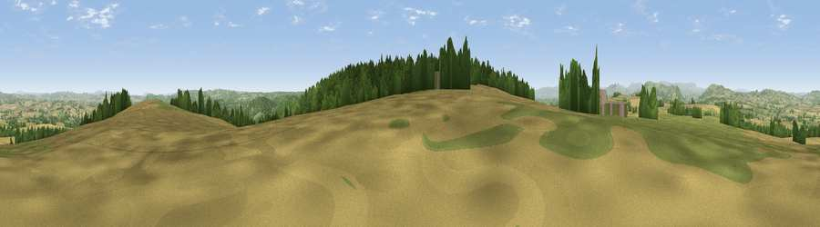

Viewpoint near Welsh Newton
#5773 in England · top 12% of its area beats it · near Welsh NewtonThe view, rendered

A 360° render of this exact spot computed from the terrain model, tree cover and land cover — summer colours, afternoon light, calibrated against photographs of famous viewpoints. Real trees, hedges and buildings will differ in detail.
The panorama
Grey silhouette: terrain skyline in each direction (720 bearings, Earth curvature and refraction included). Dashed green: skyline with trees (+15 m) and buildings (+8 m) as obstacles. Blue strip: how far the ground is visible on each bearing.
Where the view opens
Wedge length = distance to the farthest visible ground on that bearing (vegetation-aware). Rings at 10, 25 and 50 km.
What fills the view
36% cropland · 36% grassland · 27% woodland ·
Angular shares of the visible panorama (visual magnitude), not map area. Landscape diversity 0.49 (0–1 Shannon).
Key numbers
More beautiful places nearby
The staircase of upgrades: each row has a higher view potential than everything closer. Driving times are estimates from straight-line distance, calibrated against real road routing — check an actual route before setting out.
| Place | Direction | Drive | Score |
|---|---|---|---|
| Viewpoint near Welsh Newton | SSW · 2 km | ~6 min | 72.0 |
| Skenchill | W · 3 km | ~7 min | 75.8 |
| Garway Hill | NW · 10 km | ~19 min | 84.6 |
| Millennium Hill | NE · 33 km | ~51 min | 86.9 |
| Worcestershire Beacon | NE · 37 km | ~56 min | 87.1 |
| Viewpoint near West Quantoxhead | SSW · 85 km | ~109 min | 87.9 |
| Viewpoint near West Quantoxhead | SSW · 86 km | ~110 min | 88.7 |
| Holdstone Hill | SW · 113 km | ~138 min | 90.2 |
51.86044, -2.71348 · source: screening · position refined by local search. Computed location — check access rights before visiting.